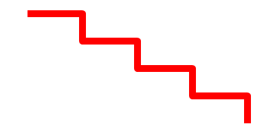

AddPathLine()
语法
AddPathLine(x.d, y.d [, Flags])概要
Adds a straight line to the vector drawing path. The line starts at the current cursor position and ends at the given coordinates.
参数
x.d, y.d The position for the end of the line. This will become the new position of the path cursor. Flags (optional) Can be one of the following values: #PB_Path_Default : The new position is absolute (default) #PB_Path_Relative: The new position is relative to the last cursor position.
返回值
无.
示例
If OpenWindow(0, 0, 0, 400, 200, "VectorDrawing", #PB_Window_SystemMenu | #PB_Window_ScreenCentered) CanvasGadget(0, 0, 0, 400, 200) If StartVectorDrawing(CanvasVectorOutput(0)) MovePathCursor(40, 20) For i = 1 To 4 AddPathLine(80, 0, #PB_Path_Relative) AddPathLine(0, 40, #PB_Path_Relative) Next i VectorSourceColor(RGBA(255, 0, 0, 255)) StrokePath(10, #PB_Path_RoundCorner) StopVectorDrawing() EndIf Repeat Event = WaitWindowEvent() Until Event = #PB_Event_CloseWindow EndIf

参阅
MovePathCursor(), ClosePath(), AddPathArc(), AddPathCurve(), AddPathCircle(), AddPathEllipse(), AddPathBox()
已支持操作系统
所有